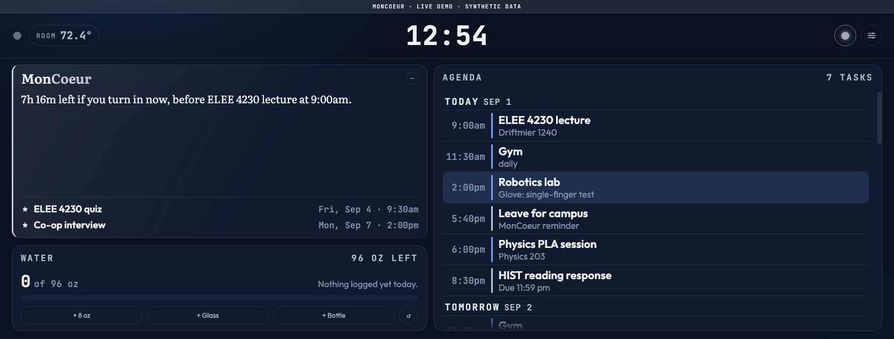
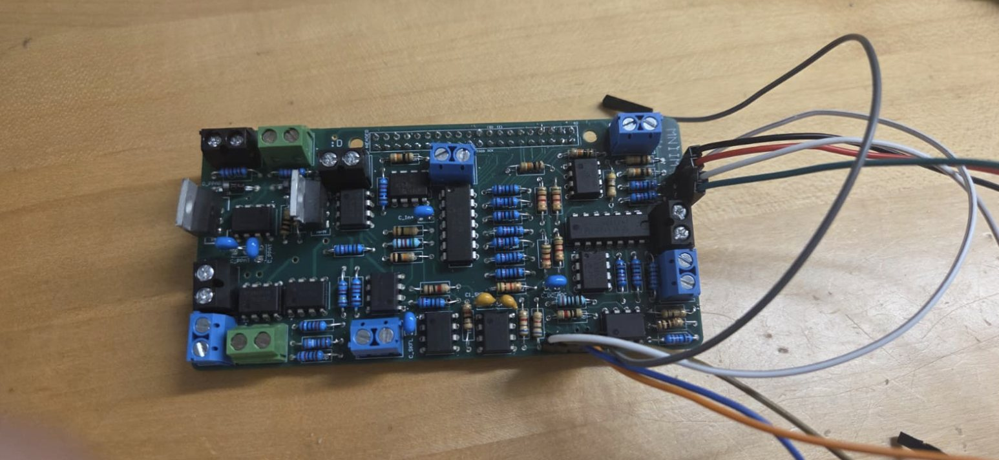
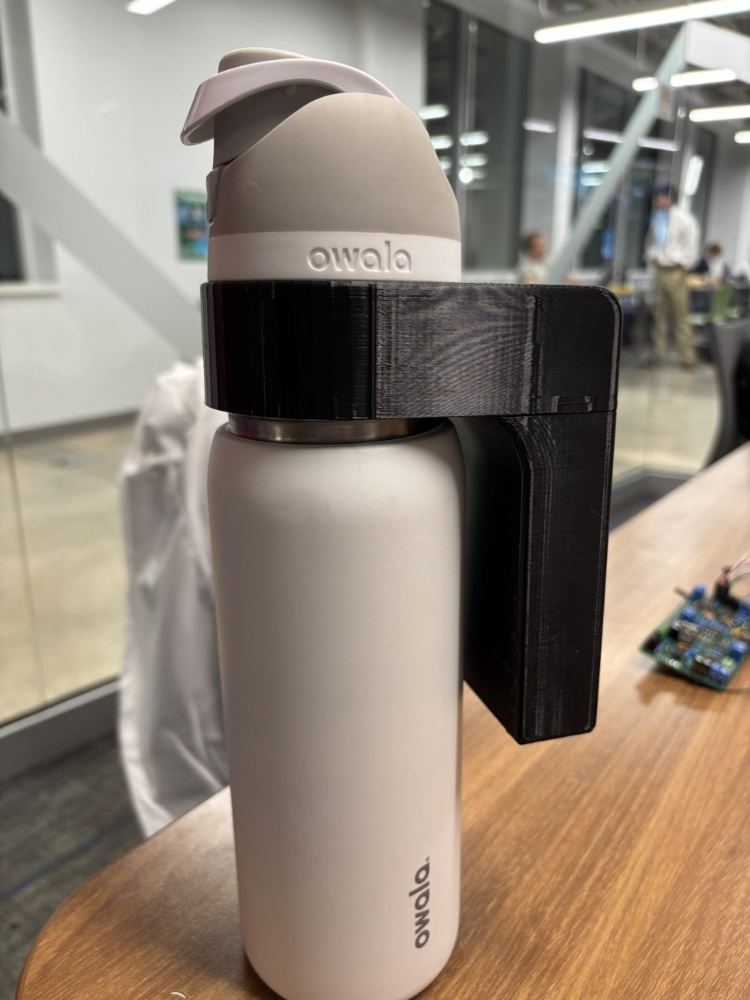
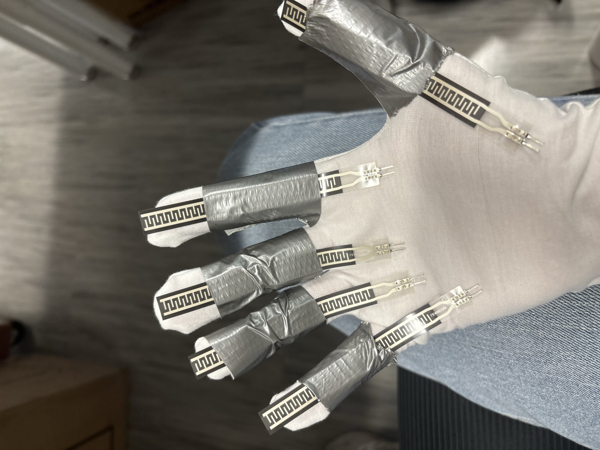

Zack LaPrade
Fourth-year Computer Engineering student at the University of Georgia, building embedded hardware from the sensor to the enclosure.
Projects
Four builds, written up from what went wrong to what the numbers came out to.

MonCoeur ↗
An always-on room system on a Raspberry Pi: lighting, display power, sleep tracking, and a dashboard that condenses it all into one useful summary.

Multitool Bench ↗
Four instruments in one box. The course forbade instrumentation ICs, so the voltmeter is a 6-bit converter built from a resistor ladder and a comparator.

Smart Water Bottle ↗
A bottle that moves its daily hydration target with heat, humidity and activity, around a custom analog front end I had to fit inside a parts budget.

Wearable Sensor Glove ↗
A wireless teleoperation glove that mirrors hand motion onto a robotic hand. I proposed it; the lab and I are building it now. Nothing is measured yet.
Experience
Electrical Engineering Intern
- Researched and tested an over-current detection device that trips within 300 ns.
- Drew schematics and did PCB layout for that device and several others.
- Debugged and validated units with X-rays, probing voltages and resistances, and replacing parts.
- Used a network analyzer to scan the quiet zone of a compact antenna range.
Undergraduate Researcher
- Working with a team on a glove that lets the wearer drive a robotic hand from across the room.
- Fitting the finger sensors and the wrist IMU that make it work.
Peer Learning Assistant, Physics
- Answered questions and worked through misconceptions with 100+ students in Physics 1, in lecture and in lab.
- Weekly peer-education training on how to explain things to someone who is stuck.
Rush Chair
- Plan and run recruitment for UGA's professional engineering fraternity.
- Organized a Shark Tank-style pitch event for potential new members.
About
I like building hardware end to end, from the sensor and the circuit to the board, the firmware and the enclosure, and I learn the most from the parts that don't work the first time. Outside of engineering I like to work out, play sports like soccer and basketball with friends, and cook.
Recognition
Get in touch
Email is the fastest way to reach me. Most of what is on this site is on GitHub.